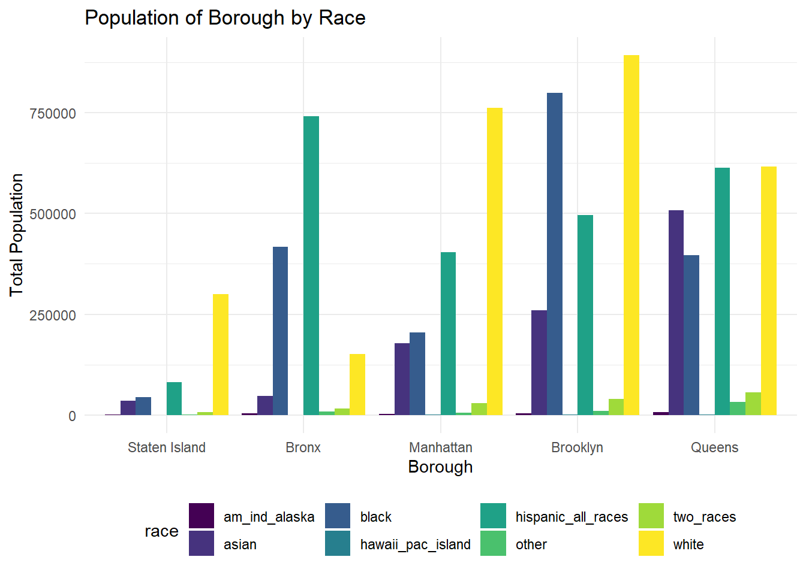
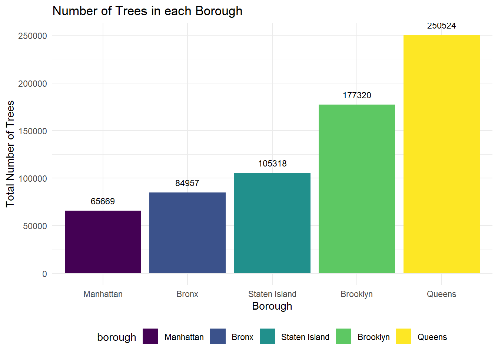
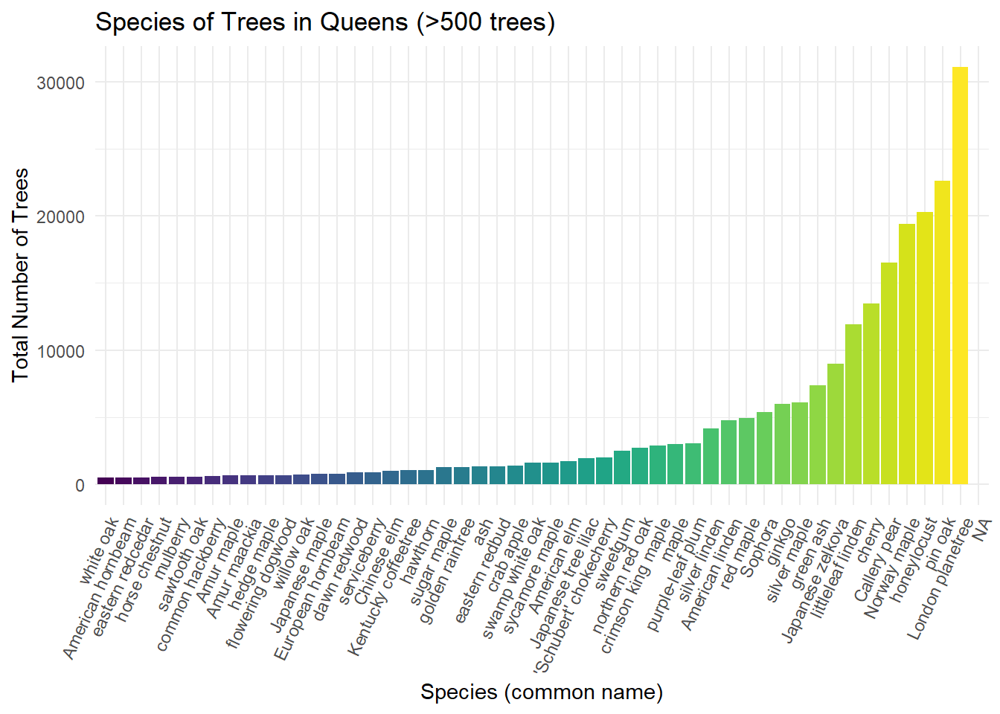
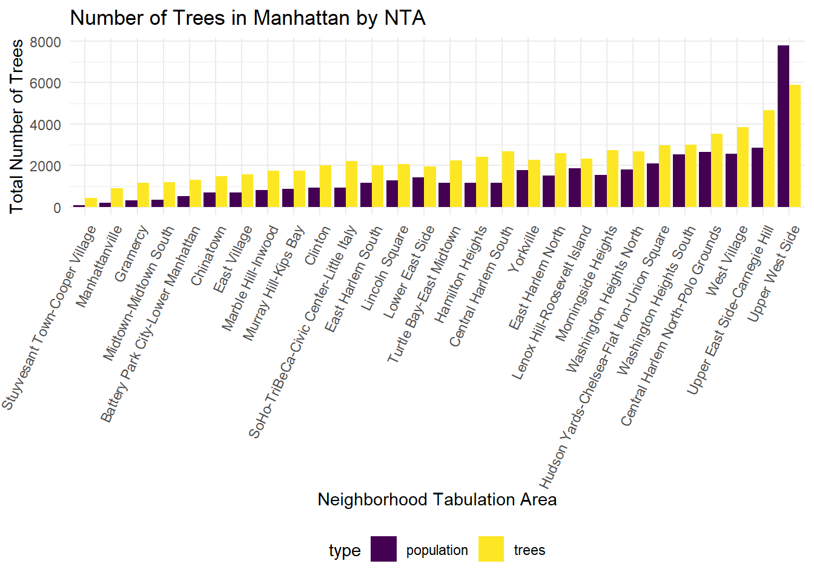

Grace’s Work
Project Goals
wanting to look closer at relationship between tree dataset and socio-demographic dataset.
library(tidyverse)
theme_set(theme_minimal() + theme(legend.position = "bottom"))
options(
ggplot2.continuous.colour = "viridis",
ggplot2.continuous.fill = "viridis"
)
scale_colour_discrete = scale_colour_viridis_d
scale_fill_discrete = scale_fill_viridis_dtree_2015_raw =
read_csv("large_tree_data/2015_tree_raw.csv", na = c("", "NA", "Unknown")) |>
janitor::clean_names() |>
select(tree_id, status, health, spc_common, nta)## Rows: 683788 Columns: 45
## ── Column specification ──────────────────────────────────────────────────────────────────────
## Delimiter: ","
## chr (26): created_at, curb_loc, status, health, spc_latin, spc_common, stewa...
## dbl (19): tree_id, block_id, tree_dbh, stump_diam, postcode, community board...
##
## ℹ Use `spec()` to retrieve the full column specification for this data.
## ℹ Specify the column types or set `show_col_types = FALSE` to quiet this message.pop_race_2010 = readxl::read_excel("small_data/pop_race2010_nta.xlsx", skip = 6, col_names = FALSE, na = "NA") |>
rename(
"borough" = "...1" ,
"census_FIPS" = "...2",
"nta" = "...3",
"nta_name" = "...4",
"total_population" = "...5",
"white_nonhis" = "...6",
"black_nonhis" = "...7",
"am_ind_alaska_nonhis" = "...8",
"asian_nonhis" = "...9",
"hawaii_pac_isl_nonhis" = "...10",
"other_nonhis" = "...11",
"two_races" = "...12",
"hispanic_any_race" = "...13"
) |>
drop_na()## New names:
## • `` -> `...1`
## • `` -> `...2`
## • `` -> `...3`
## • `` -> `...4`
## • `` -> `...5`
## • `` -> `...6`
## • `` -> `...7`
## • `` -> `...8`
## • `` -> `...9`
## • `` -> `...10`
## • `` -> `...11`
## • `` -> `...12`
## • `` -> `...13`Distribution of Race by Borough
dem_race =
pop_race_2010 |>
group_by(borough) |>
summarize(white = sum(white_nonhis),
black = sum(black_nonhis),
asian = sum(asian_nonhis),
am_ind_alaska = sum(am_ind_alaska_nonhis),
hawaii_pac_island = sum(hawaii_pac_isl_nonhis),
other = sum(other_nonhis),
hispanic_all_races = sum(hispanic_any_race),
two_races = sum(two_races)
) |>
pivot_longer(
white:two_races,
names_to = "race",
values_to = "n"
) |>
mutate(borough = fct_reorder(borough, n))
ggplot(data = dem_race, aes(x = borough, y = n, fill = race)) + geom_bar(stat = 'identity', position = 'dodge') +
labs(
title = "Population of Borough by Race",
x = "Borough",
y = "Total Population"
)
all_data = left_join(tree_2015_raw, pop_race_2010, by = "nta")Total Number of Trees in each borough
number_tree =
all_data |>
group_by(borough) |>
summarize(n_trees = n_distinct(tree_id)) |>
mutate(borough = fct_reorder(borough, n_trees))
ggplot(data = number_tree, aes(x = borough, y = n_trees, fill = borough)) + geom_bar(stat = 'identity') + geom_text(aes(label = n_trees), size = 3, vjust = -1) +
labs(
title = "Number of Trees in each Borough",
x = "Borough",
y = "Total Number of Trees"
)
Queens Trees by Species
#prevalent trees (n > 500)
queens_prev_trees =
all_data |>
filter(borough == "Queens") |>
count(spc_common) |>
filter(n > 500) |>
mutate(spc_common = fct_reorder(spc_common, n))
ggplot(data = queens_prev_trees, aes(x = spc_common, y = n, fill = spc_common)) + geom_bar(stat = 'identity') + theme(legend.position = "none", axis.text.x = element_text(angle = 65, hjust=1)) +
labs(
title = "Species of Trees in Queens (>500 trees)",
x = "Species (common name)",
y = "Total Number of Trees"
)
#rare trees (n < 500)
queens_rare_trees =
all_data |>
filter(borough == "Queens") |>
count(spc_common) |>
filter(n < 500) |>
mutate(spc_common = fct_reorder(spc_common, n))
ggplot(data = queens_rare_trees, aes(x = spc_common, y = n, fill = spc_common)) + geom_bar(stat = 'identity') + theme(legend.position = "none", axis.text.x = element_text(angle = 65, hjust=1)) +
labs(
title = "Species of Trees in Queens (<500 trees)",
x = "Species (common name)",
y = "Total Number of Trees"
)
Trees in Manhattan by NTA
mhtn_number_tree =
all_data |>
filter(borough == "Manhattan") |>
group_by(nta_name) |>
summarize(n_trees = n_distinct(tree_id),
n_population = (sum(total_population)/100000)) |>
pivot_longer(
n_trees:n_population,
names_to = "type",
names_prefix = "n_",
values_to = "total"
) |>
mutate(nta_name = fct_reorder(nta_name, total))
ggplot(mhtn_number_tree, aes(x = nta_name, y = total, fill = type)) + geom_bar(stat = 'identity', position = 'dodge')+ theme(axis.text.x = element_text(angle = 65, hjust=1)) +
labs(
title = "Number of Trees in Manhattan by NTA",
x = "Neighborhood Tabulation Area",
y = "Total Number of Trees"
)
Manhattan Trees and Population Demographics by NTA
number_mhtn =
all_data |>
filter(borough == "Manhattan") |>
summarize(n_trees = n_distinct(tree_id))
percentages =
all_data |>
filter(borough == "Manhattan") |>
group_by(nta_name) |>
summarize(n_trees = n_distinct(tree_id),
n_white = (sum(white_nonhis)/sum(total_population)*100),
n_black = (sum(black_nonhis)/sum(total_population)*100),
n_asian = (sum(asian_nonhis)/sum(total_population)*100),
n_pacific_islander = (sum(hawaii_pac_isl_nonhis)/sum(total_population)*100),
n_amer_ind = (sum(am_ind_alaska_nonhis)/sum(total_population)*100),
n_other = (sum(other_nonhis)/sum(total_population)*100),
n_hispanic = (sum(hispanic_any_race)/sum(total_population)*100),
n_two_races = (sum(two_races)/sum(total_population)*100)
) |>
mutate(n_trees = as.numeric(n_trees)) |>
arrange(desc(n_trees))
percentages |>
knitr::kable(digits = 3)| nta_name | n_trees | n_white | n_black | n_asian | n_pacific_islander | n_amer_ind | n_other | n_hispanic | n_two_races |
|---|---|---|---|---|---|---|---|---|---|
| Upper West Side | 5881 | 67.709 | 8.420 | 5.959 | 0.026 | 0.103 | 0.336 | 15.460 | 1.988 |
| Upper East Side-Carnegie Hill | 4673 | 87.648 | 1.093 | 4.986 | 0.020 | 0.029 | 0.214 | 4.630 | 1.379 |
| West Village | 3837 | 80.891 | 2.023 | 8.153 | 0.030 | 0.075 | 0.353 | 6.062 | 2.413 |
| Central Harlem North-Polo Grounds | 3515 | 5.770 | 67.073 | 1.731 | 0.027 | 0.340 | 0.259 | 22.831 | 1.969 |
| Washington Heights South | 2990 | 11.252 | 10.454 | 2.727 | 0.006 | 0.144 | 0.360 | 74.056 | 1.001 |
| Hudson Yards-Chelsea-Flat Iron-Union Square | 2988 | 65.091 | 5.726 | 11.785 | 0.030 | 0.133 | 0.372 | 14.602 | 2.262 |
| Morningside Heights | 2751 | 46.041 | 13.623 | 13.342 | 0.054 | 0.188 | 0.363 | 23.521 | 2.870 |
| Washington Heights North | 2684 | 25.776 | 4.078 | 2.534 | 0.015 | 0.086 | 0.317 | 66.149 | 1.044 |
| Central Harlem South | 2670 | 16.085 | 55.877 | 3.541 | 0.060 | 0.256 | 0.408 | 21.080 | 2.695 |
| East Harlem North | 2591 | 6.784 | 35.549 | 3.044 | 0.016 | 0.221 | 0.319 | 52.743 | 1.325 |
| Hamilton Heights | 2407 | 10.897 | 32.246 | 2.199 | 0.031 | 0.245 | 0.367 | 52.193 | 1.822 |
| Lenox Hill-Roosevelt Island | 2327 | 75.313 | 4.421 | 10.609 | 0.076 | 0.071 | 0.324 | 7.258 | 1.929 |
| Yorkville | 2269 | 75.996 | 3.667 | 9.271 | 0.032 | 0.065 | 0.277 | 8.810 | 1.881 |
| Turtle Bay-East Midtown | 2253 | 77.053 | 2.091 | 12.990 | 0.041 | 0.045 | 0.359 | 5.772 | 1.649 |
| SoHo-TriBeCa-Civic Center-Little Italy | 2215 | 66.094 | 2.185 | 22.175 | 0.026 | 0.070 | 0.400 | 6.481 | 2.569 |
| Lincoln Square | 2065 | 73.351 | 4.407 | 11.248 | 0.023 | 0.094 | 0.285 | 8.647 | 1.945 |
| East Harlem South | 2014 | 17.395 | 24.571 | 8.293 | 0.095 | 0.166 | 0.376 | 47.492 | 1.611 |
| Clinton | 2008 | 56.427 | 6.253 | 15.007 | 0.068 | 0.153 | 0.394 | 19.347 | 2.352 |
| Lower East Side | 1943 | 22.552 | 10.871 | 24.900 | 0.018 | 0.195 | 0.262 | 39.571 | 1.632 |
| Marble Hill-Inwood | 1754 | 15.103 | 9.068 | 1.891 | 0.011 | 0.137 | 0.383 | 72.428 | 0.980 |
| Murray Hill-Kips Bay | 1746 | 66.647 | 4.775 | 16.225 | 0.032 | 0.108 | 0.357 | 9.870 | 1.987 |
| East Village | 1575 | 65.452 | 3.949 | 14.863 | 0.050 | 0.145 | 0.412 | 12.378 | 2.751 |
| Chinatown | 1474 | 16.339 | 4.776 | 63.872 | 0.023 | 0.079 | 0.157 | 13.419 | 1.336 |
| Battery Park City-Lower Manhattan | 1311 | 65.405 | 3.244 | 20.192 | 0.043 | 0.088 | 0.385 | 7.695 | 2.947 |
| Midtown-Midtown South | 1196 | 64.097 | 4.576 | 20.754 | 0.028 | 0.119 | 0.321 | 8.117 | 1.987 |
| Gramercy | 1172 | 73.685 | 3.298 | 13.363 | 0.036 | 0.068 | 0.275 | 7.228 | 2.047 |
| Manhattanville | 913 | 7.451 | 25.786 | 2.161 | 0.022 | 0.336 | 0.331 | 62.802 | 1.111 |
| Stuyvesant Town-Cooper Village | 447 | 74.113 | 3.568 | 12.647 | 0.029 | 0.109 | 0.299 | 6.675 | 2.561 |
Trees and Population Demographics by Borough
borough_data =
all_data |>
group_by(borough) |>
summarize(n_trees = n_distinct(tree_id),
n_white = (sum(white_nonhis)/sum(total_population)*100),
n_black = (sum(black_nonhis)/sum(total_population)*100),
n_asian = (sum(asian_nonhis)/sum(total_population)*100),
n_pacific_islander = (sum(hawaii_pac_isl_nonhis)/sum(total_population)*100),
n_amer_ind = (sum(am_ind_alaska_nonhis)/sum(total_population)*100),
n_other = (sum(other_nonhis)/sum(total_population)*100),
n_hispanic = (sum(hispanic_any_race)/sum(total_population)*100),
n_two_races = (sum(two_races)/sum(total_population)*100)
) |>
mutate(n_trees = as.numeric(n_trees)) |>
arrange(desc(n_trees))
borough_data |>
knitr::kable(digits = 3)| borough | n_trees | n_white | n_black | n_asian | n_pacific_islander | n_amer_ind | n_other | n_hispanic | n_two_races |
|---|---|---|---|---|---|---|---|---|---|
| Queens | 250524 | 29.844 | 17.488 | 22.621 | 0.051 | 0.303 | 1.601 | 25.421 | 2.671 |
| Brooklyn | 177320 | 34.907 | 33.734 | 9.613 | 0.025 | 0.187 | 0.439 | 19.492 | 1.603 |
| Staten Island | 105318 | 71.685 | 6.017 | 6.866 | 0.030 | 0.122 | 0.190 | 13.858 | 1.233 |
| Bronx | 84957 | 12.822 | 30.587 | 3.344 | 0.029 | 0.257 | 0.644 | 51.134 | 1.184 |
| Manhattan | 65669 | 50.647 | 13.477 | 9.221 | 0.032 | 0.132 | 0.327 | 24.282 | 1.883 |